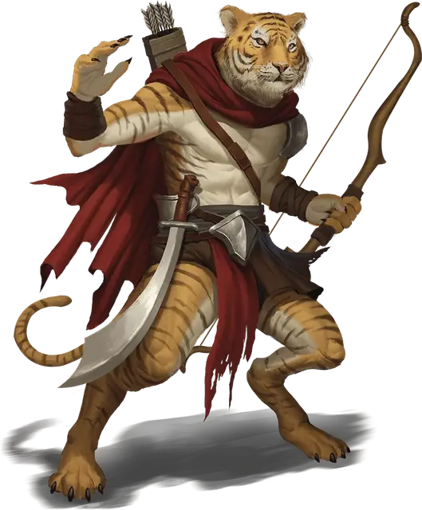

Вертигр
Weretiger
Средний Гуманоид (Человек, Перевёртыш), нейтральный

Класс Доспеха 12
Хиты 120 (16к8 + 48)
Скорость 30 футов (40 футов в облике тигра)
| мод | спас | ||
|---|---|---|---|
| СИЛ | 17 | +3 | +3 |
| ЛОВ | 15 | +2 | +2 |
| ТЕЛ | 16 | +3 | +3 |
| мод | спас | ||
|---|---|---|---|
| ИНТ | 10 | +0 | +0 |
| МДР | 13 | +1 | +1 |
| ХАР | 11 | +0 | +0 |
Навыки Восприятие +5, Скрытность +4
Иммунитет к урону дробящий, колющий, рубящий от немагических атак, кроме нанесённых посеребрённым оружием
Чувства тёмное зрение 60 футов, пассивное Восприятие 15
Языки Общий, не может говорить в облике тигра
Опасность 4 (1100 опыта)
Бонус мастерства +2
Среда обитания Лес, Луг, Пустыня
Особенности
Перевертыш. Вертигр может действием превратиться в тигра, гибрид тигра и гуманоида, или же принять свой истинный облик гуманоида. Вся его статистика, за исключением размера, остаётся одинаковой во всех обликах. Всё несомое и носимое им снаряжение не превращается. Он принимает свой истинный облик, если умирает.
Острый слух и тонкий нюх. Вертигр совершает с преимуществом проверки Мудрости (Восприятие), полагающиеся на слух и обоняние.
Наскок (только в облике тигра или гибрида). Если вертигр переместится как минимум на 15 футов по прямой к существу, а затем в том же ходу попадет по нему атакой когтем, эта цель должна преуспеть в спасброске Силы Сл 14, иначе будет сбита с ног. Если цель сбита с ног, вертигр может бонусным действием совершить по ней одну атаку укусом.
Действия
Мультиатака (только в облике гуманоида или гибрида). В облике гуманоида вертигр совершает две атаки скимитаром или две атаки длинным луком. В облике гибрида он может атаковать либо как тигр, либо как гуманоид.
Укус (только в облике тигра или гибрида). Рукопашная атака оружием: +5 к попаданию, досягаемость 5 футов, одна цель. Попадание: Колющий урон 8 (1к10 + 3). Если цель — гуманоид, она должна преуспеть в спасброске Телосложения Сл 13, иначе станет проклятой ликантропией вертигра.
Коготь (только в облике тигра или гибрида). Рукопашная атака оружием: +5 к попаданию, досягаемость 5 футов, одна цель. Попадание: Рубящий урон 7 (1к8 + 3).
Скимитар (только в облике гуманоида или гибрида). Рукопашная атака оружием: +5 к попаданию, досягаемость 5 футов, одна цель. Попадание: Рубящий урон 6 (1к6 + 3).
Длинный лук (только в облике гуманоида или гибрида). Дальнобойная атака оружием: +4 к попаданию, дистанция 150/600 футов, одна цель. Попадание: Колющий урон 6 (1к8 + 2).
Описание
Вертигры — яростные охотники и воины с надменным и привередливым характером. Гибкие, с гладкой мускулатурой в гуманоидном облике, они имеют рост выше среднего и выглядят ухоженными. Вертигры вырастают до немыслимых размеров в зверином и гибридном облике, но чаще всего сражаются в гуманоидном обличье. Они не любят заражать проклятьем других, так как каждый новый вертигр означает конкуренцию за территорию и добычу.
Вертигры живут в джунглях на окраине цивилизации, и путешествуют в изолированные поселения для торговли или отдыха. Они живут и охотятся одни или в маленьком семейном кругу.
См. дополнительно статью: «Бестиарий: Ликантропы»